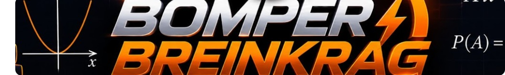

BOMPER / KONTAK
Jou volgende vraag maak saak.
Watter wiskunde-onderwerp wil jy hê ons moet volgende verduidelik? Deel jou lesvoorstel met BOMPER BREINKRAG.
STEL ’N LES VOOR
Wat wil jy graag leer?
Tik jou voorstel hieronder. Die knoppie sal jou boodskap kopieer sodat jy dit in ’n YouTube-kommentaar kan plaas. Dit stuur nie outomaties ’n boodskap nie.
Plak die gekopieerde teks op YouTube om jou voorstel te deel.
BLY VERBIND
Volg die BREINKRAG-kanaal
Nuwe video’s en wiskunde-inhoud word op ons amptelike YouTube-kanaal gepubliseer.

Besoek ons YouTube-kanaal ↗Ons het nog nie ’n e-posadres of kontakvorm wat outomaties boodskappe ontvang, by die webwerf gekoppel nie.